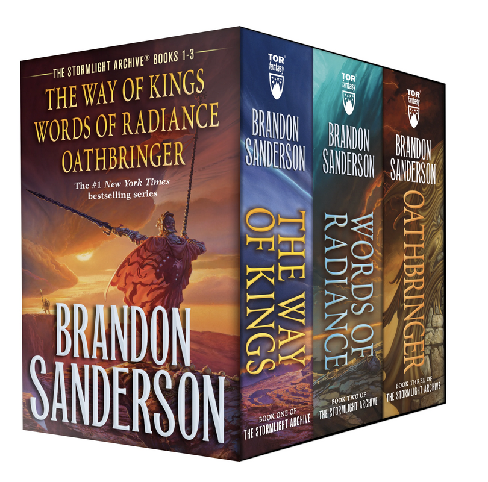

This page says a bit more about me :P
When I am not studying, I like to bake questionable foods, read high fantasy, and practice taekwondo.
These are my favorite things to bake:
I also love reading Brandon Sanderson Brando Sando.
Here are some of my favorite albums; the first three are especially great for locking in 🔒:
| Album | Band |
|---|---|
| The Lord of the Rings: The Fellowship of the Ring - the Complete Recordings | Howard Shore |
| The Lord of the Rings: The Two Towers - the Complete Recordings | Howard Shore |
| The Lord of the Rings: The Return of the King - the Complete Recordings | Howard Shore |
| Music of the Spheres | Coldplay |